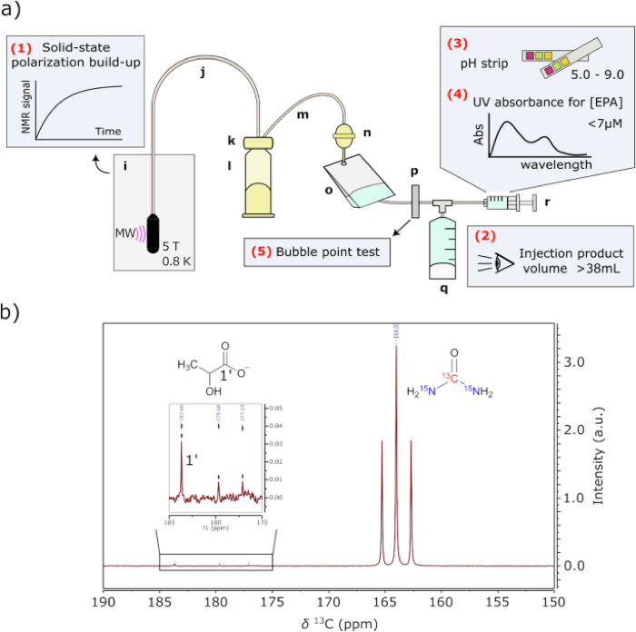
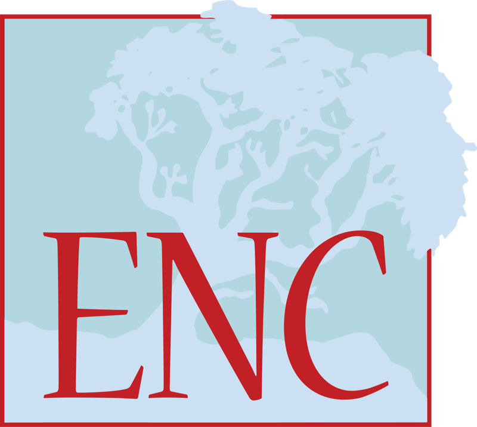

Translation of hyperpolarized [¹³C,¹⁵N₂]urea MRI for novel human brain perfusion studies
Contributed to a first-in-human hyperpolarized urea MRI study for novel human brain perfusion imaging.
Peer-reviewed publications and conference proceedings.

Contributed to a first-in-human hyperpolarized urea MRI study for novel human brain perfusion imaging.

Co-first author on a study evaluating D₂O dissolution to improve hyperpolarized [2-¹³C]pyruvate imaging of glutamate and lactate conversion.
Conference presentation of the hyperpolarized urea MRI brain perfusion study.

Presented work on hyperpolarized [¹³C,¹⁵N₂]urea MRI for human brain vascular imaging.